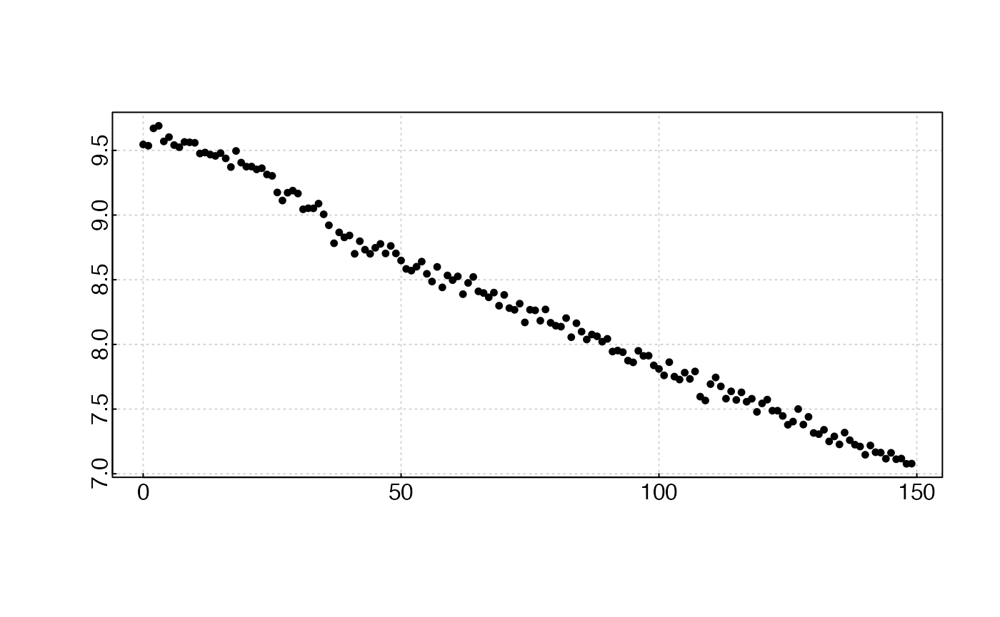
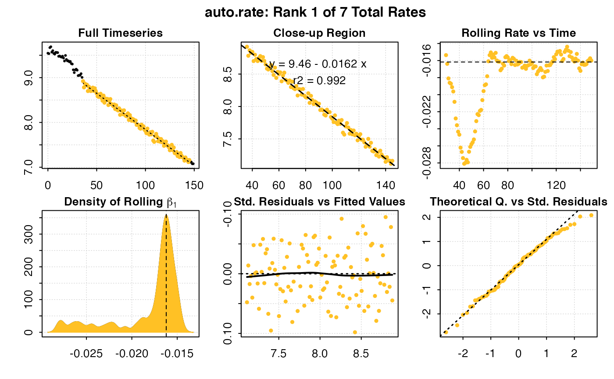
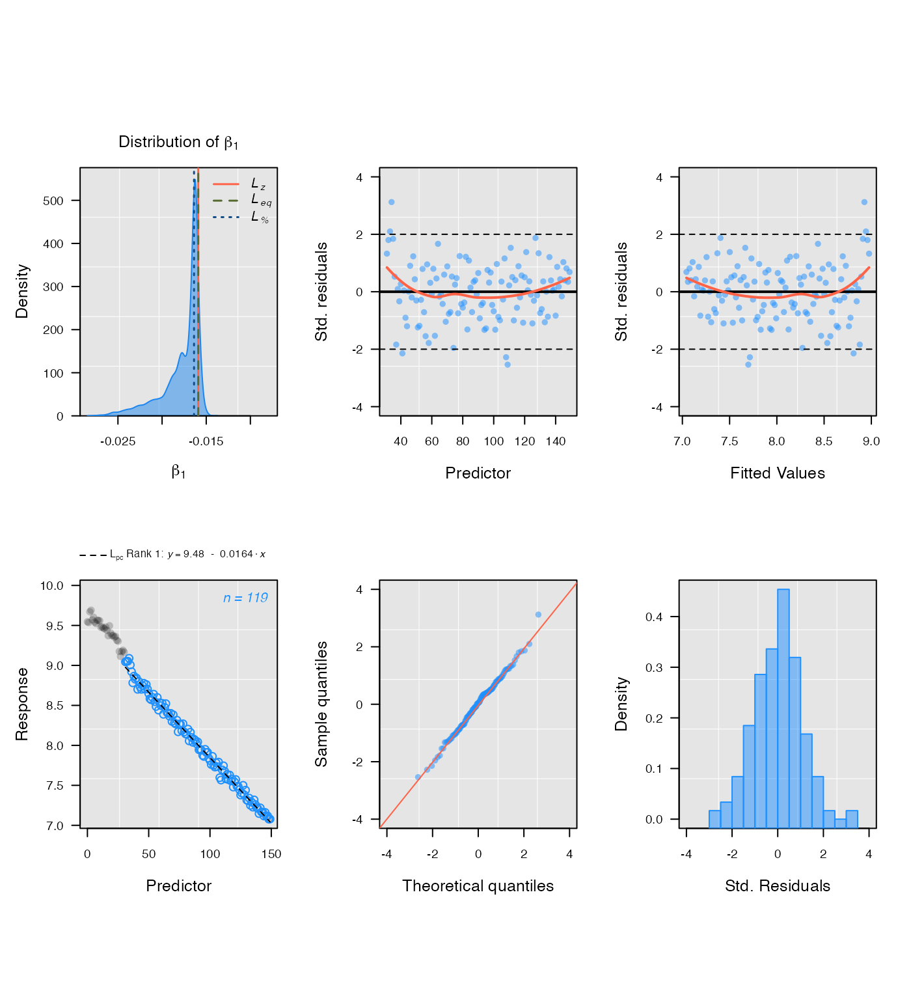
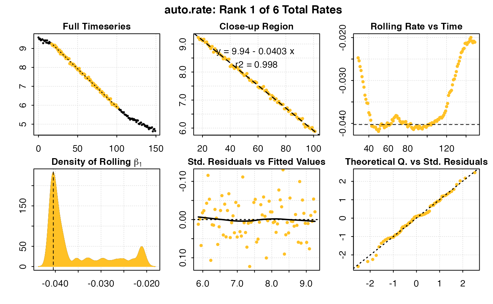
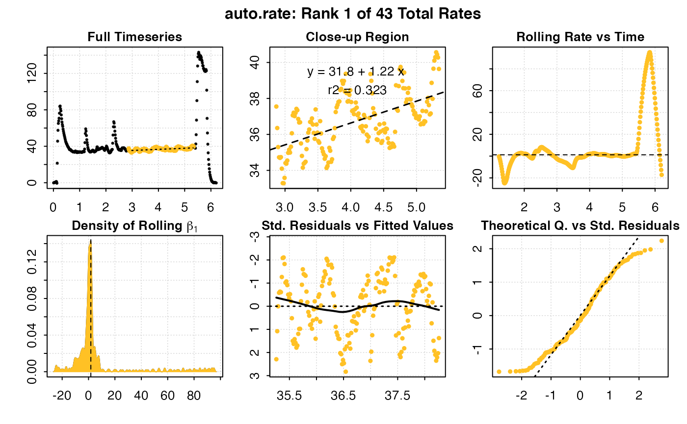
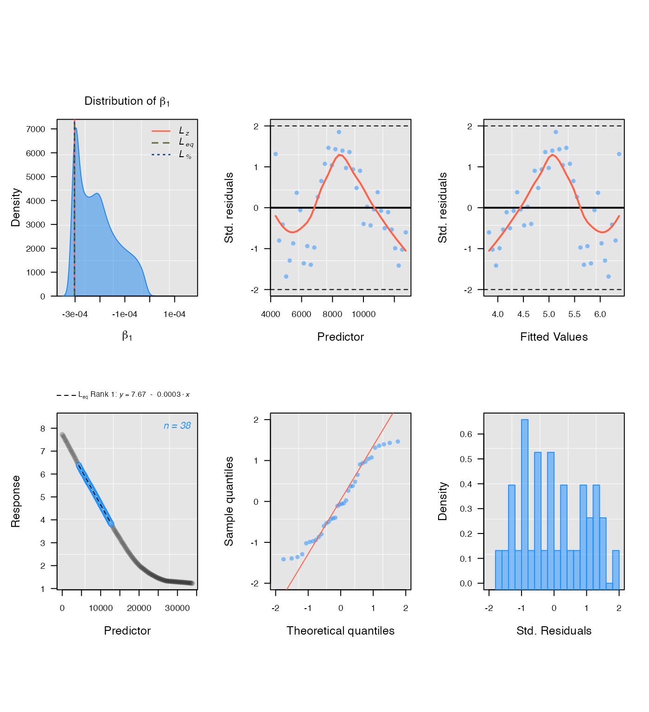

Comparative performance of auto_rate and LoLinR
Source:vignettes/auto_rate_comp.Rmd
auto_rate_comp.RmdTo our current knowledge, one other R package, LoLinR (Olito et al. 2017), performs ranking techniques on time series data. The two packages use fundamentally different techniques to estimate linear regions of data. We detail auto_rate()’s methods here. LoLinR’s methods can be found in their online vignette here, and Olito et al. (JEB, 2017).
To summarise the main differences between the two methods:
auto_rate()uses machine learning techniques to detect linear segments first before running linear regressions on these data regions.LoLinR, by contrast, performs all possible linear regressions on the data first, and then implements a ranking algorithm such that the most linear regions are top-ranked.LoLinR’s algorithms use three different metrics to select linear data, in which at least one performs very well to detect linear segments – even if a small amount data is provided (<100 samples). In comparison,auto_rate()uses only one method (kernel density estimation), which performs less accurately at smaller sample sizes, but that accuracy increases greatly with more data available.
- Because
auto_rate()detects linear data first before it performs linear regressions, it is several orders of magnitude faster thanLoLinR. Thusauto_rate()is ideal for large data. On the other hand,LoLinRis restricted to small datasets (see below).
Thus, even though both packages can perform linear metric analysis and determine the “most linear” section of a plot, the user will observe varying differences between the two methods used (see Comparisons section below).
Processing times
The main function in LoLinR is called rankLocReg(). The time it takes this function to process data follows an exponential relationship with its length, illustrated below:

rankLocReg() was run on different sized datasets (blue dots) and the time to completion recorded. These analyses were run in RStudio on the same dataset subset to the appropriate length, on a 2017 Macbook Pro with 3.1 GHz Intel Core i5 processor, 16GB RAM, and no other applications running. The orange dots are estimated completion times for larger datasets extrapolated from the results. Note the log scale.
As we can see, any dataset larger than around 400 to 500 in length takes a prohibitively long time to be processed by rankLocReg(). In a test under the same conditions, auto_rate() processed a dataset of 5000 datapoints in size in 1.25 seconds; rankLocReg() would take 47 days. One dataset included in respR (squid.rd) is over 34,000 datapoints in length. auto_rate() completed analysis of this dataset in 18.5 seconds; under the exponential relationship of rankLocReg() this would take approximately 163 years to be processed. In reality, it is likely (as we have experienced) RAM limits will cause the rankLocReg() process to crash well before these durations are reached.
The developers of LoLinR are aware of the processing limitations of rankLocReg(), and in the documentaton for the package recommend thinning (i.e. subsampling) datasets longer than 500 in length using another function that they provided, thinData(). However, thinning datasets of thousands to tens of thousands of datapoints to only a few hundred would inevitably cause loss of information, which may not be desirable in certain use cases.
Comparisons
We provide below comparisons of the outputs of auto_rate() and rankLocReg() on simulated data generated by the sim_data() function and on real experimental data included in both packages. Because of rankLocReg()’s limitations for large data, the analysis of all data in these comparisons is restricted to 150 data points. There are no such restrictions in auto_rate(), so for experimental data it was used without modifications to its length. However for rankLocReg() they were, as recommended in the LoLinR documentation, subsampled beforehand to 150 datapoints in length using the thinData() function. Because rankLocReg() has three different methods (z, eq, and pc) to rank the data, for the comparisons below we selected the most accurate method that best ranked the data in each case.
We show the output diagnostic plots for each function on six sample data analyses, plus a summary of the top ranked linear section identified showing the rate, and start and end times of the estimated linear region.
Simulated data: default

## respR:
rspr1 <- auto_rate(sim1$df)
## LoLinR:
lir1 <- rankLocReg(xall = sim1$df$x, yall = sim1$df$y, 0.2, method = 'pc')
#> rankLocReg fitted 7260 local regressions
plot(lir1)
#> Compare top ranked outputs#> respR
#> Rate: -0.0162
#> Start Time: 36
#> End Time: 145#> LoLinR
#> Rate: -0.0164
#> Start Time: 32
#> End Time: 150Simulated data: corrupted
## respR:
rspr2 <- auto_rate(sim2$df)
## LoLinR:
lir2 <- rankLocReg(xall = sim2$df$x, yall = sim2$df$y, 0.2, "pc")
#> rankLocReg fitted 7260 local regressions
plot(lir2)#> Compare top ranked outputs#> respR
#> Rate: -0.0229
#> Start Time: 102
#> End Time: 149#> LoLinR
#> Rate: -0.0223
#> Start Time: 34
#> End Time: 81Simulated data: segmented
## respR:
rspr3 <- auto_rate(sim3$df)
## LoLinR:
lir3 <- rankLocReg(xall = sim3$df$x, yall = sim3$df$y, 0.2, "pc")
#> rankLocReg fitted 7260 local regressions
plot(lir3)#> Compare top ranked outputs#> respR
#> Rate: -0.0403
#> Start Time: 17
#> End Time: 101#> LoLinR
#> Rate: -0.0398
#> Start Time: 40
#> End Time: 118Experimental data: UrchinData from LoLinR

## LoLinR:
lolinr_urchindata <- rankLocReg(xall=UrchinData$time, yall=UrchinData$C, alpha=0.2, method="z")
#> rankLocReg fitted 8911 local regressions
plot(lolinr_urchindata)#> Compare top ranked outputs#> respR
#> Rate: -0.1363
#> Start Time: 19
#> End Time: 69.5#> LoLinR
#> Rate: -0.1441
#> Start Time: 47
#> End Time: 63.5Experimental data: CormorantData from LoLinR
## respR:
rcor <- auto_rate(CormorantData)
## LoLinR:
lcor <- thinData(CormorantData, by = nrow(CormorantData)/150)$newData1 # thin data
lcoregs <- rankLocReg(xall=lcor$Time, yall=lcor$VO2.ml.min, alpha=0.2,
method="eq", verbose=FALSE)
lcoregs <- reRank(lcoregs, newMethod='pc')
plot(lcoregs)#> Compare top ranked outputs#> respR
#> Rate: 1.21504
#> Start Time: 2.87
#> End Time: 5.34#> LoLinR
#> Rate: 0.47775
#> Start Time: 2.44
#> End Time: 4.97Experimental data: squid.rd from respR
## respR:
rsquid <- auto_rate(squid.rd)
## LoLinR:
lsquid <- thinData(squid.rd, by = nrow(squid.rd)/150)$newData1
lsquidregs <- rankLocReg(xall=lsquid$Time, yall=lsquid$o2, alpha=0.2,
method="eq")
#> Warning in pcRank((allRegs$ciRange)): input/output have ties
#> rankLocReg fitted 7260 local regressions
plot(lsquidregs)
#> Compare top ranked outputs#> respR
#> Rate: -0.00030672
#> Start Time: 7586
#> End Time: 13848#> LoLinR
#> Rate: -0.00030188
#> Start Time: 4321
#> End Time: 12738Summary
We can see from the above comparisons that in these examples on small datasets, auto_rate and rankLocReg output similar results in identifying linear regions. Rates identified are often (within the magnitudes of the data ranges used) only marginally different, and typically the start and end times of the linear region identified are similar, or at least the regions widely overlap.
Again, we must stress that comparisons between these functions are limited because of the need in rankLocReg to subsample long data to a manageable length. It is likely that some of the minor differences in results comes from reducing the number of datapoints rankLocReg has to work with, though some is also presumably attributable to the different analytical methodologies. These results do suggest that this thinning does not radically alter the data, and so the results from rankLocReg would be valid in these cases. However, this is a very limited comparison: in these examples we only had to thin two of the datasets. There may be cases where such thinning alters the characteristics of the data such that rankLocReg identifies incorrect linear segments, or identifies different linear sections depending on the degree of thinning performed. This could particularly be the case where the rates fluctuate rapidly, or data is of very high resolution. The same is of course true of auto_rate; the algorithms are complex but fallible, so it may on occasion identify spurious or incorrect linear regions. So we again remind users that they should always examine the results output by auto_rate to ensure they are relevant to the question of interest.
In the case of which of these methods to use with your respirometry data, caution would suggest that all possible datapoints be used in analyses if possible, and as we have shown here and in the performance vignette auto_rate handles large data easily, while LoLinR clearly does not.
Users are very much encouraged to explore both functions and compare the outputs with their own data. However, given that auto_rate and rankLocReg appear to perform similarly in identifying linear regions of data, but in auto_rate a reduction in data resolution is unnecessary, we would advocate the use of auto_rate for your respirometry data unless you have a particular reason to believe LoLinR package will output more relevant results.
References
Olito, C., White, C. R., Marshall, D. J., & Barneche, D. R. (2017). Estimating monotonic rates from biological data using local linear regression. The Journal of Experimental Biology, jeb.148775-jeb.148775. doi:10.1242/jeb.148775